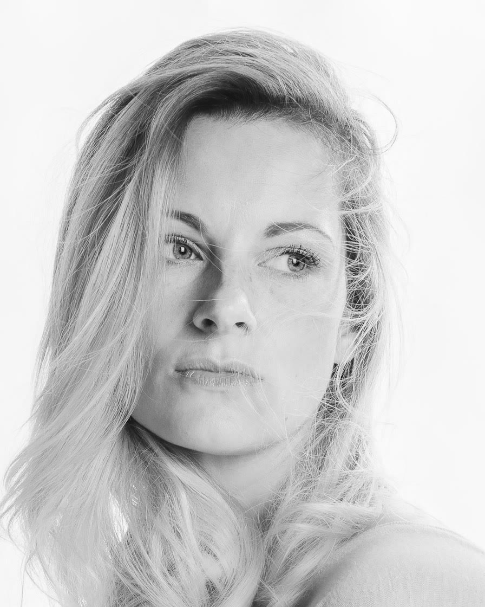
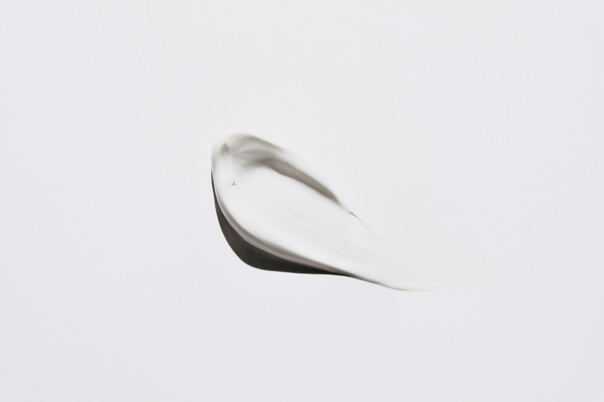
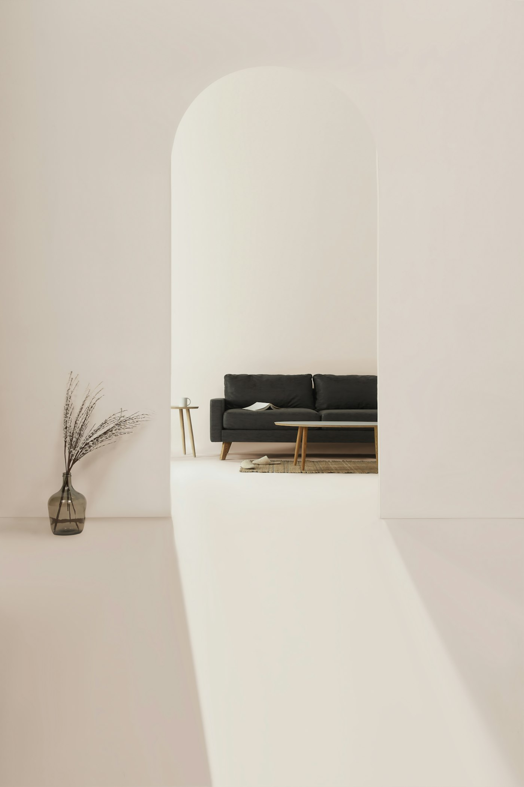
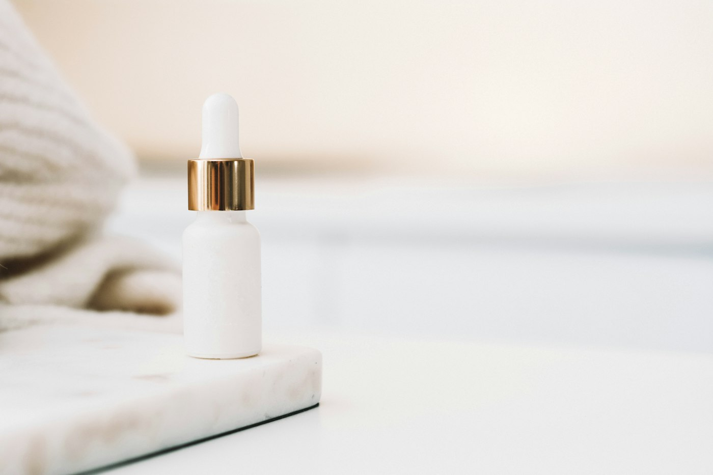
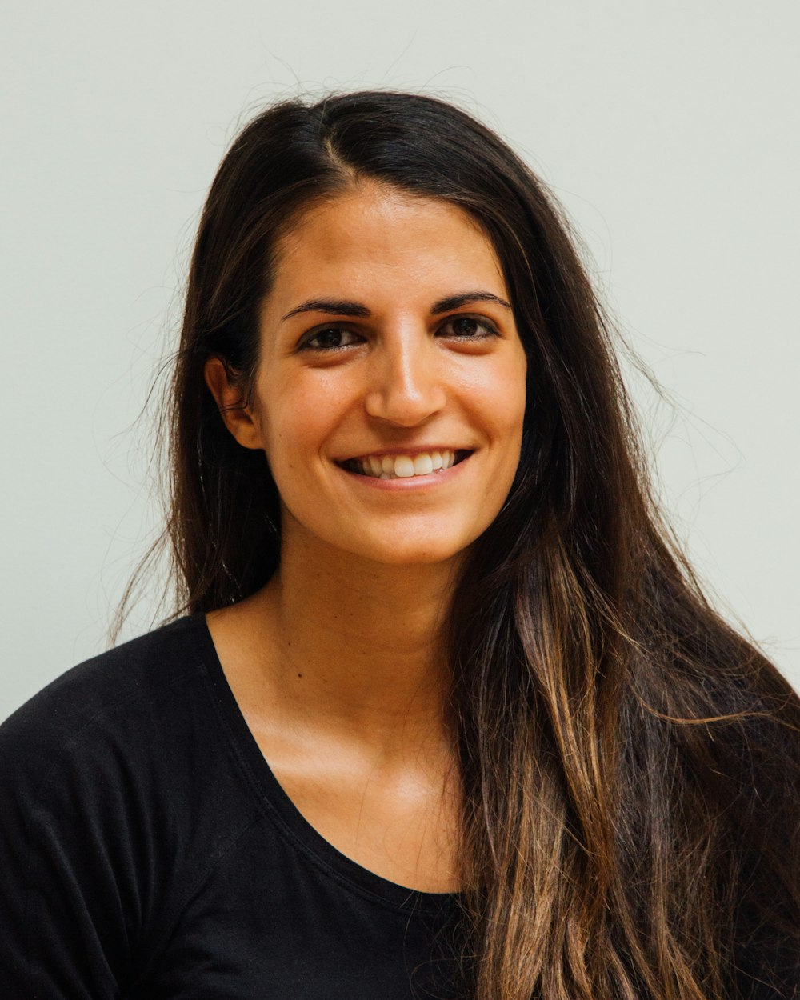

Estética médica · Jardins, São Paulo
O melhor resultado é o que ninguém aponta.1
Rejuvenescimento facial com critério médico e doses que preservam seus traços. Comece por uma avaliação de 50 minutos, sem compromisso de fazer nada no mesmo dia.
Responsável técnica: Dra. Helena Duarte, dermatologista
CRM-SP 184.302 · RQE 61.457

Regras da casa
Quatro regras que valem da primeira consulta à décima.
São elas que mantêm o resultado discreto. E são elas que, às vezes, fazem a consulta terminar sem procedimento nenhum.
-
Tempo
Cinquenta minutos só de avaliação.
Olhamos o rosto em repouso e em movimento, fazemos fotos padronizadas e conversamos sobre o que incomoda e o que você quer manter.
-
Calma
O plano vai por escrito, para casa.
Etapas, intervalos e valores no papel. Ninguém espera que você decida no mesmo dia, e ninguém liga cobrando depois.
-
Medida
Doses conservadoras e retorno em 15 dias.
Começamos pelo mínimo eficaz. Todo injetável inclui uma revisão para ajustes finos.
-
Procedência
O produto é aberto na sua frente.
Só usamos produtos registrados na Anvisa, e o número do lote fica anotado na sua ficha.

nuance
substantivo feminino
- Diferença sutil entre coisas parecidas.
- O que separa um rosto descansado de um rosto “feito”.
Mapa facial
Toque onde incomoda.
Escolha uma região do rosto. Mostramos o que costuma resolver, quanto tempo leva e quando você volta à rotina. A indicação final sai sempre da avaliação.
Maçãs do rosto
O que mais ouvimos
“Parece que o meu rosto desceu.”
Com o tempo, a gordura e o osso do terço médio perdem sustentação, e o que está abaixo acompanha. Repor um pouco de suporte nas maçãs costuma suavizar olheira e bigode chinês ao mesmo tempo.
Opções mais indicadas
- Duração da sessão
- 40 a 60 min
- Volta à rotina
- No mesmo dia, com inchaço leve por 2 a 5 dias
- Quando aparece
- Na hora; resultado final em 15 a 30 dias
- Quanto dura
- 12 a 18 meses
- Sessões
- 1 sessão + retorno em 15 dias
Faixas médias, para você se organizar. Dose, técnica e número de sessões saem da avaliação.
Agendar avaliação para esta regiãoTratamentos
Tempo de sessão e volta à rotina de cada um. Valores só depois da avaliação, porque nenhum plano sai igual ao outro.
Rosto
5 tratamentosToxina botulínica
Linhas de expressão na testa, entre as sobrancelhas e ao redor dos olhos
Preenchimento com ácido hialurônico
Volume e sustentação em olheiras, maçãs do rosto, sulcos, lábios e mandíbula
Bioestimuladores de colágeno
Flacidez e qualidade da pele, com resultado progressivo
Skinbooster
Hidratação profunda, viço e linhas finas
Fios de PDO
Sustentação leve e estímulo de colágeno no terço médio do rosto
Pele
5 tratamentosLaser fracionado
Textura, poros dilatados, manchas e cicatrizes de acne
Peeling químico
Manchas, oleosidade e renovação da camada superficial
Microagulhamento
Cicatrizes de acne, poros e firmeza da pele
Limpeza de pele profunda
Cravos, oleosidade e preparo da pele para outros tratamentos
Tratamento de melasma
Manchas acastanhadas, com plano combinado e manutenção em casa
Corpo
4 tratamentosUltrassom microfocado corporal
Flacidez em abdome, braços e parte interna das coxas
Radiofrequência
Firmeza da pele e aspecto da celulite
Criolipólise
Gordura localizada que resiste a dieta e exercício
Tratamento de estrias
Estrias vermelhas e brancas, com laser e microagulhamento
Não sabe por onde começar? A avaliação existe exatamente para isso.
Agendar avaliação
Como funciona
Antes de qualquer agulha.
Quatro etapas, sempre nesta ordem. Nenhuma é pulada, nem quando você já chega sabendo o que quer.
-
Avaliação
50 minutos
Análise facial em repouso e em movimento, fotos padronizadas e uma conversa franca sobre expectativas.
-
Plano por escrito
Para levar para casa
Tudo o que conversamos vira um plano com etapas, intervalos e valores. Você leva para casa e responde quando quiser.
-
Procedimento
No dia em que você escolher
Anestésico tópico, produto aberto na sua frente e número do lote anotado na sua ficha.
-
Retorno em 15 dias
Incluso em todo injetável
Comparamos com as fotos da avaliação e fazemos os ajustes finos.

Uma casa silenciosa na Haddock Lobo.
A agenda é espaçada para a recepção nunca lotar, e nada do seu atendimento se ouve do corredor. As salas têm porta de verdade e a mesma calma da recepção.
- 4 salas
- de procedimento, com luz natural e pia própria
- Recuperação
- uma sala só para descansar antes de ir embora
- Manobrista
- na porta, durante todo o horário de atendimento
- 8 min
- a pé da estação Oscar Freire, Linha 4-Amarela

Três formações, a mesma régua.
Médica, dentista e biomédica, cada uma no que faz melhor. Os casos são discutidos em conjunto antes de qualquer plano.
-
Dra. Helena Duarte
Médica dermatologista e responsável técnica. Rejuvenescimento facial e lasers.
CRM-SP 184.302 · RQE 61.457
Antes de marcar qualquer ponto, pede que você fale, sorria e franza a testa. A dose nasce de como o seu rosto se mexe.
-

Dra. Camila Rezende
Cirurgiã-dentista, especialista em Harmonização Orofacial. Lábios, contorno e bioestimuladores.
CRO-SP 98.214
Mede as proporções do rosto com paquímetro antes de qualquer marcação e prefere duas sessões leves a uma carregada.
-
Juliana Prado
Biomédica esteta. Peelings, microagulhamento e protocolos de melasma.
CRBM-1 54.871
Monta com você a rotina de casa, porque boa parte do resultado de pele acontece entre uma sessão e outra.
Perguntas frequentes
O que todo mundo pergunta na primeira vez.
A proposta é justamente o contrário. Trabalhamos com o mínimo eficaz e revisamos tudo no retorno de 15 dias. Se alguém comentar, o mais provável é que pergunte se você descansou.
Sim. São 50 minutos com análise do rosto em repouso e em movimento, fotos padronizadas e um plano por escrito para levar para casa. A recepção informa o valor pelo WhatsApp antes de você marcar.
Pouco. Usamos anestésico tópico e, quando a região permite, cânula no lugar da agulha. A maioria descreve como uma picada rápida ou uma pressão. Você pode pedir pausa a qualquer momento.
Na maioria dos casos, sim. Com toxina, você volta no mesmo dia; preenchimentos podem deixar um inchaço leve por 2 a 5 dias, e laser ou peeling pedem alguns dias de vermelhidão ou descamação. O plano por escrito já indica o melhor momento, inclusive se houver um evento marcado.
A toxina botulínica dura de 4 a 6 meses. Ela começa a agir em 3 a 5 dias e chega ao efeito pleno em cerca de 15, que é quando fazemos o retorno. Com aplicações regulares, muitas pacientes conseguem espaçar as sessões.
Fazemos o que fizer sentido para o seu rosto, e às vezes isso é menos do que você pediu. Se não houver indicação, dizemos com todas as letras. Já houve avaliação que terminou só com uma rotina de cuidados para casa.
Sim, e cada vez mais. O rosto masculino pede outros pontos e outras doses: preservamos ângulos marcados e sobrancelhas mais retas, para que o resultado não suavize demais os traços.
Comece pela avaliação.
Cinquenta minutos com a profissional indicada para o seu caso. Você sai com um plano por escrito e nenhuma obrigação de fazer nada no mesmo dia.
OndeRua Haddock Lobo, 1.307, Cerqueira César. Manobrista na porta.
QuandoSeg a sex, 9h às 20h · Sáb, 9h às 15h
Prefere ligar?(11) 3062-4180